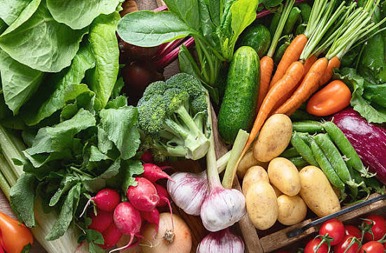
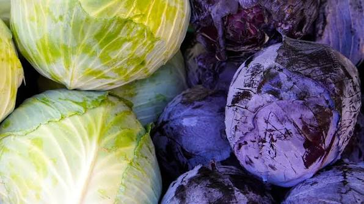
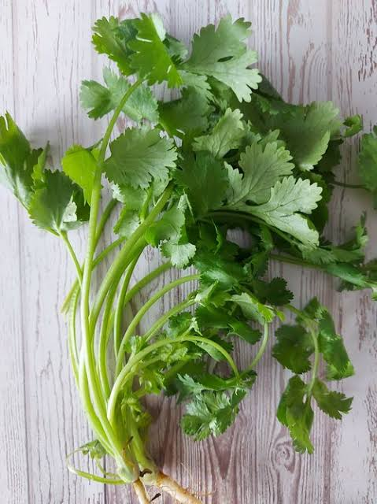
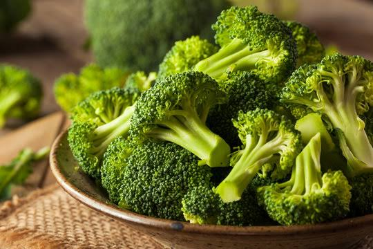
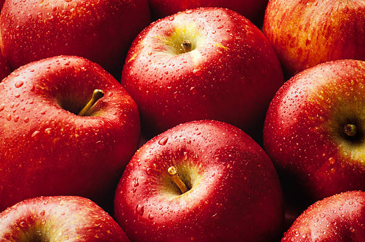
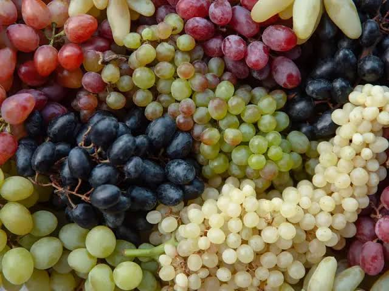
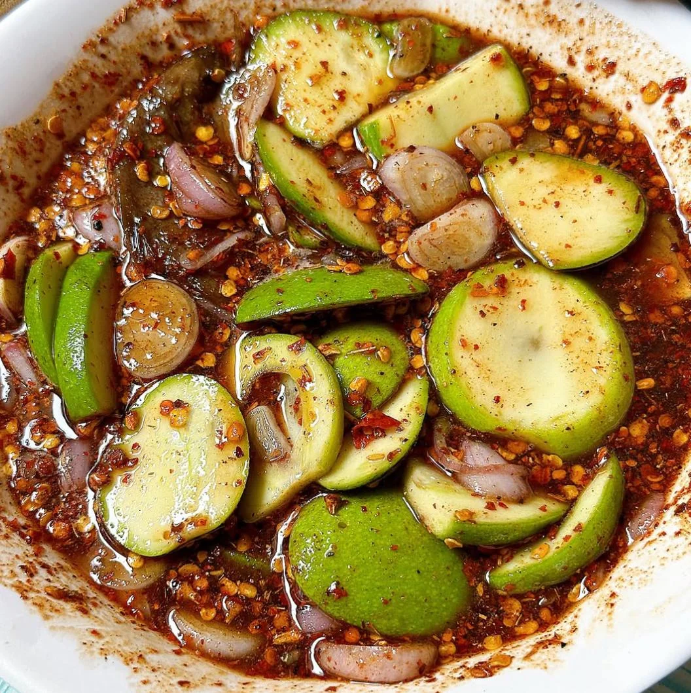
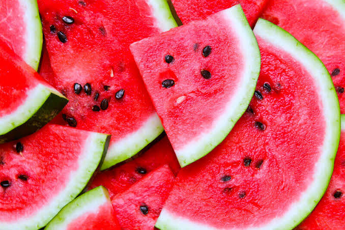

Vegetable's Benefits
- Improves Heart Health
- Boosts Digestion
- Aids Weight Management
- Strengthens Immunity
- Lowers Disease Risk
Premium Veggies Presentation
Explore and try out our vegetables available in our store. Fresh from the garden upon ordering.
View CollectionEating healthy and being Healthy leads to positivity .

Vegetables come with their own health benefits. Check out our collection of vegetables and their benefits.
| Type of Vegetable | Specific Benefit | Effectiveness (1-lowest, 5-highest) |
|---|---|---|
| 1. Cabbage | Reduces Inflammation | 5 |
| 2. Broccoli | Fights Chronic Disease | 5 |
| 3. Potato | Aids Gut Health | 4 |
| 4. Coriander | Lowers Blood Sugar | 3 |



Visit Our Official Store or Check our New Arrivals
😱 Designed for Style and Performance.
We have a wide range of vegetables available in our store, visit us for more.

A round, crunchy fruit that is usually red green, or yellow in color. Apples are rich in fiber and vitamin C, making them a healthy snack option.

A small, round fruit that is usually green red, or purple in color. Grapes are rich in antioxidants and vitamin.

A tropical fruit with a sweet, juicy flesh and a distinctive aroma. Mangos are rich in vitamin C and beta-carotene.

A large, juicy fruit with a green rind and red or yellow flesh. Watermelons are rich in vitamin C and lycopene.